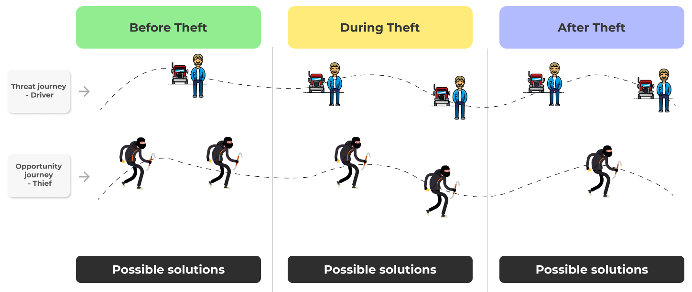

When concluding my studies, I completed my master’s thesis in collaboration with Volvo Group at their Experience Design team. The focus of my research was to develop a tangible concept for a holistic security system that enhances security for truck drivers in relation to cargo and fuel theft on the road. The project followed the Design Thinking methodology in order to understand user needs and from that, design an add-on service that creates value for all stakeholders, including the driver, fleet owners and Volvo Group.
Theft in the truck driving industry is a major problem today. Around 80% of all cargo losses in the industry involve criminal motives and 25% of all truck drivers have experienced theft at least once. This problem has resulted in more than 140 reported thefts within the EMEA region, with an average value of goods per incident of EUR 800,000. Due to the increasing number of thefts in the trucking industry, Volvo has identified a need for better security to support drivers and prevent theft.
The aim of this thesis project was to explore the concept of a holistic security system that supports truck drivers during criminal incidents, with a focus on security from the driver’s perspective and business from the customer’s perspective, which in Volvo’s case, primarily refers to fleet managers.
The requirements for this project was to follow the Design Thinking process, where the research should be based on quantitative and/or qualitative data. Other than that, I had full freedom to decide what to research and how to conduct the research in order to produce the final result.
To gain in-depth insights into truck drivers’ security concerns, semi-structured interviews were conducted with eight truck drivers. The questions I had prepared were divided into different themes to simplify the analysis later. The goal of the interviews was to understand their problems, current routines and motivations in relation to theft on the road. The group I interviewed was relatively diverse, with participants of different ages and genders, and with varying types of experience within the industry.
To define the interviews, I conducted a thematic analysis using an online tool called DelveTool. Based on these insights, I defined five different Jobs-To-Be-Done statements to clarify the underlying factors of their problems. During the process, the define phase was repeated twice because it became clear that more detailed insights were needed beyond the JTBD statements, especially about the threats truck drivers face. To explore this further, a Theft Journey was created with two perspectives: one from the driver's point of view, focusing on threats to the driver, the truck, and the cargo, and one from the thief's point of view, focusing on their opportunities and goals in the context of theft. All insights were organized in chronological order and divided into before theft, during theft and after theft.

Based on the defined problems, I organized two workshops to ideate solutions with people from different teams at Volvo. In the first session, I presented the background of the problem, including theft within the industry and a summary of the interviews, to get everyone on the same page about the session’s purpose. After the introduction, I presented the JTBD statements along with different How-Might-We questions. The exercise in the workshop was to come up with solutions to these HMW questions for 5 minutes for each JTBD, followed by a group discussion after each round.
The workshop resulted in several useful ideas for improving security for truck drivers. To select and combine these ideas into a holistic security system, I used the Theft Journey as a guide, as it showed possible ways to support the driver and hinder the thief in the context of theft. For each opportunity identified in the journey, I selected the most relevant workshop ideas that could contribute to the final concept.
To visualize the security system concept, I created a simple system description in Figma. The system is divided into two main parts: proactive actions and reactive actions. Each part includes various elements such as hardware, actions, triggers, technologies and the relationships between them. During this phase, I worked closely with Volvo teams who had extensive knowledge about the potential solution and technology. This system description addressed the drivers’ theft-related problems, and the next step was to expand the concept to show its potential value for the customer from a business perspective.
To achieve this, I created a Business Model Canvas and a Value Proposition Canvas. To build these two canvases, I mostly used information gathered from discussions with different people at Volvo including people working with services, customers, business and security and also from my own assumption based from interviews with drivers and reading of different reports. Due to limited time left on the project, I did not have enough time to work on this as much as I would want to.
The idea was tested from a business perspective, focusing on the Business Model Canvas and the Value Proposition Canvas. For this part of the project, I used methods inspired by Testing Business Ideas (Osterwalder et al., 2019).
I created 14 hypotheses: 8 related to reliability, 3 to viability, and 3 to feasibility. Due to limited time, not all parts of the business model were covered by a hypothesis. To decide which hypotheses to test first, I placed them on an assumption map, where the top-right quadrant represented the highest priority. In total, 6 hypotheses were tested, using two test methods: the Expert Stakeholder Experiment and the Partner & Supplier Interview Experiment.
If you are interested in the results and other details of the project, don't hesitate to contact me. I can give you a short presentation of the project and answer any questions you may have.